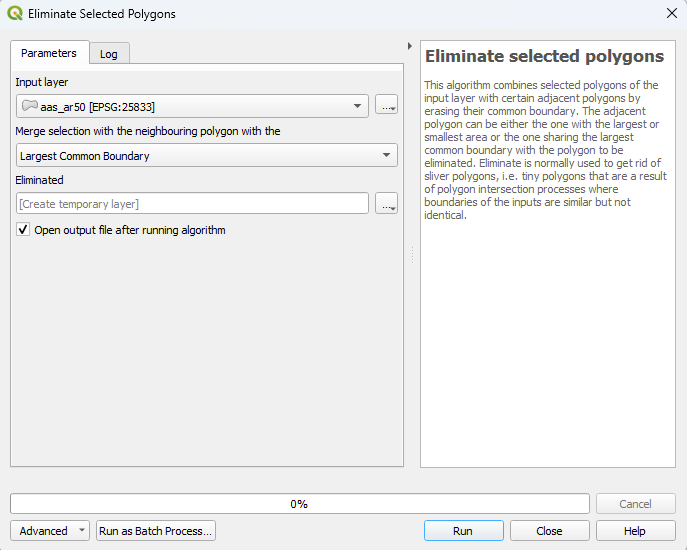
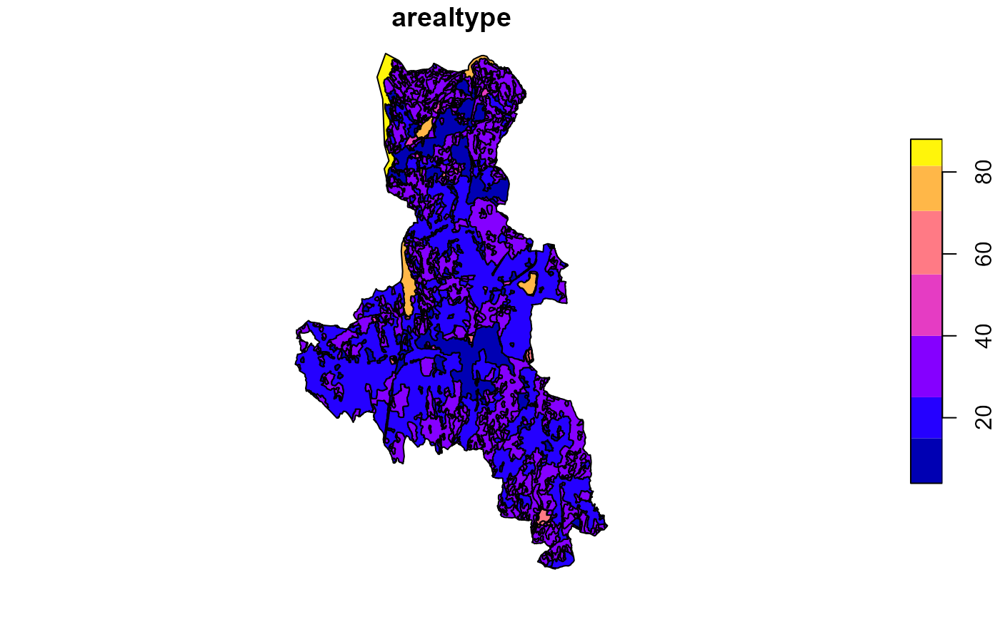
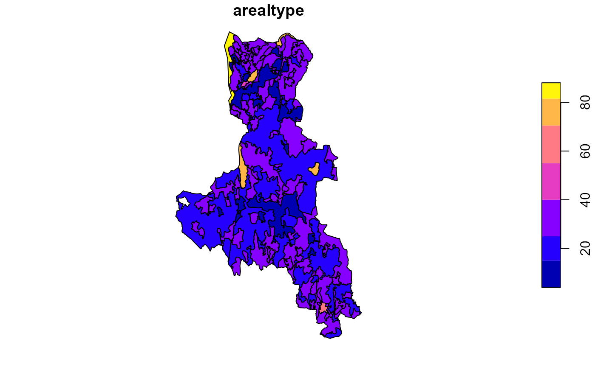

QGIS has a useful tool to merge selected polygons with the nearest polygon with the longest shared common boundary. This tool is quite useful in simplifying maps that have many (too) small polygons which are unnecessary to retain. I’ve always had to switch to QGIS to perform this operation which is quite annoying since all my other GIS workflows are in R. I haven’t found an R-package which can mimic this QGIS function so I’ve implemented a version of it in R. This page guides you through how to use it.
Please, if you notice any errors or would like to improve the function, let me know!
To get started, we need data. For this guide we will use the pubically available NIBIO AR50 land use map for Ås, which I’ve downloaded and hosted on a public NIBIO GitLab repository:
download.file(url = "https://gitlab.nibio.no/moritzshore/example-files/-/raw/main/simplify-geometries/aas_ar50.zip", destfile = "aas_ar50.zip")
unzip("aas_ar50.zip")
lu_map <- sf::read_sf( "aas_ar50.shp")
plot(lu_map['arealtype'])
This map contains about 30 polygons with less than 10 square meters of area, some even with 0. Clearly these should be removed. To flag these, we calculate their area in the attribute table
lu_map %>%
# fix geometries
st_make_valid() %>%
# select attributes of interest
select(lokalId, arealtype, skogbonite, treslag, jordbruk, vegetasjon, geometry) %>%
# cast any multipolygons to polygons
st_cast("MULTIPOLYGON") %>% st_cast("POLYGON") %>%
# calculate the area
mutate(area = st_area(geometry)) %>%
# Flag any polygons with an area of less than 10 square meters.
mutate(flag = if_else(condition = (area < units::as_units(10, "m^2")), true = "flagged", false = "ok")) -> polygon_map## Warning in st_cast.sf(., "POLYGON"): repeating attributes for all
## sub-geometries for which they may not be constantWe shall also set which column we want to use as the
type column (in this case, arealtype). The
function will try to merge the flagged polygon with a polygon of the
same type first, before looking at other types. If this kind of
functionality is not needed, then you can set the type
column to an ID column which will ensure no neighbors of
the same type.
simplify_polygons(
polygon_map = polygon_map,
type = "arealtype",
interactive = FALSE,
verbose = FALSE
) -> polygon_map_simplifiedAs we can see, the map now has 30 less polygons:
## [1] 854 9## [1] 824 9With the verbose and interactive parameters
disabled, we do not see what happens within the function. Enabling
verbose prints the decisions that the function makes and
tells you which polygons were merged into which. Enabling the
interactive parameter allows you to see in the viewer pane
what is going on and it also allows you to undone merges you disagree
with.
To make it more visible what the function does, we will now further simplify any polygons with less then 100,000 m^2 of area:
polygon_map_simplified %>% mutate(area = st_area(geometry)) %>%
# Flag any polygons with an area of less than 10 square meters.
mutate(flag = if_else(condition = (area < units::as_units(100000, "m^2")), true = "flagged", false = "ok")) -> polygon_map_2
simplify_polygons(
polygon_map = polygon_map_2,
type = "arealtype",
interactive = FALSE,
verbose = FALSE
) -> polygon_map_simplified2
plot(polygon_map_simplified2['arealtype'])